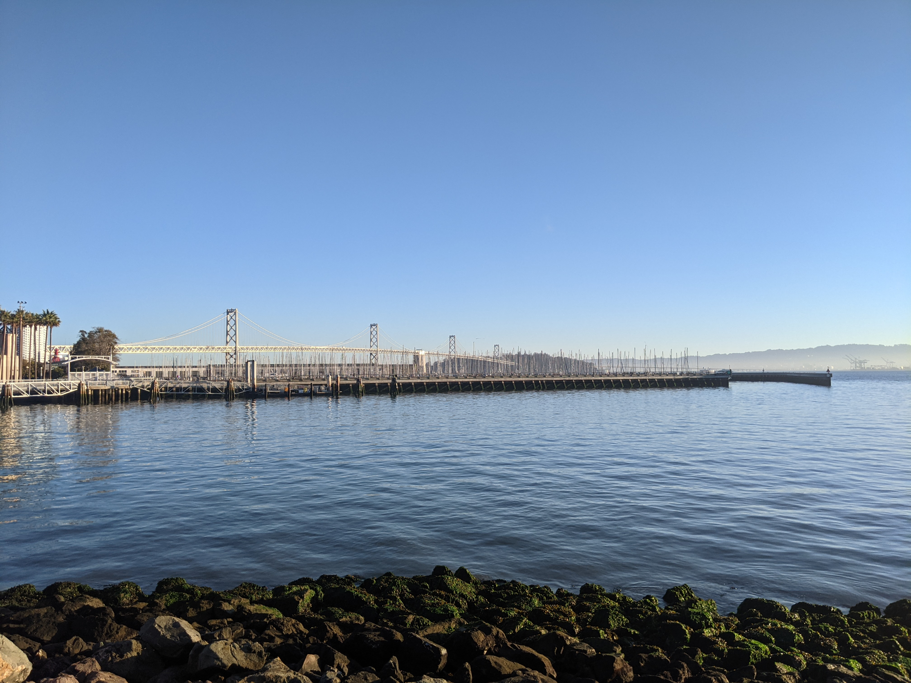

| Inicio | Imagenes | Videos | Sobre mi | Preguntas |
Mi nombre es Federico Ponte un ingeniero de software senior con 9 años de experiencia enfocada en desarrollo web y procesamiento de datos. Hice mis estudios de pregrado en Venezuela en ingeniería en computación y de postgrado en ingeniería de software en California. Trabajé 3 años y medio en Venezuela, donde trabajé en una startup y luego en una empresa consultora. El resto de mi experiencia ha sido acá en los Estados Unidos donde he trabajado por 5 años. Desde pequeño siempre me han gustado las computadoras, matemáticas y el mundo web. Soy un fan de la naturaleza y la fotografía.
Algunas de mis fotos:


Gracias por ver mi pagina